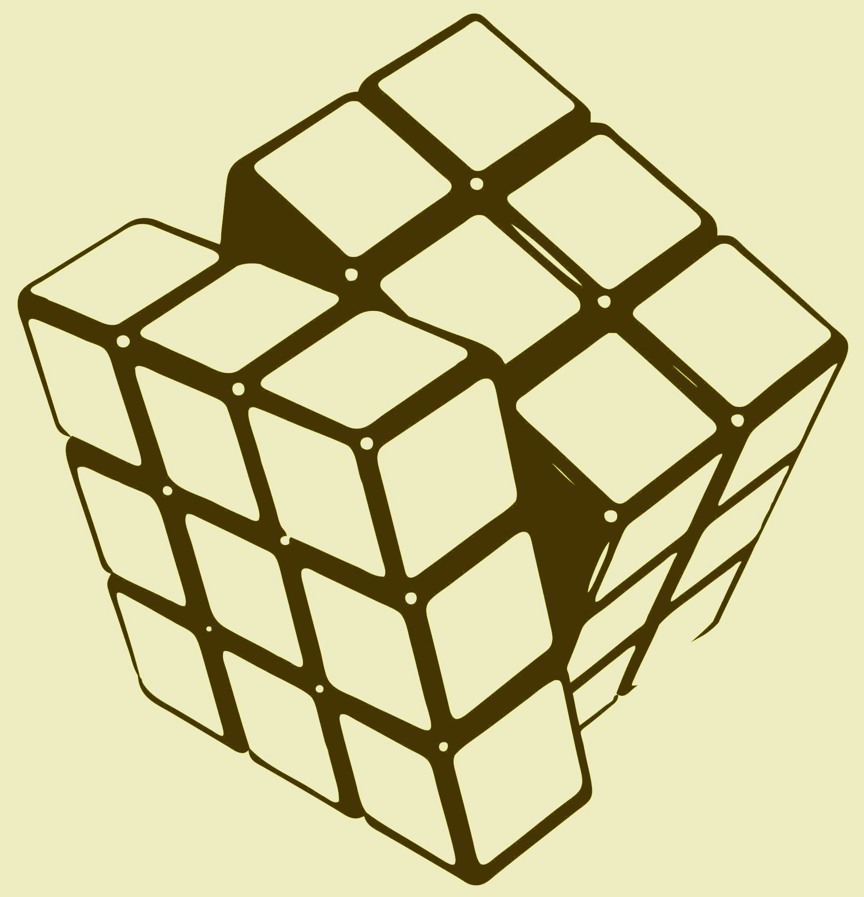

Az egyik legismertebb Rubik-játék, amit ma Magyarországon (és a világon) kapni lehet. A kocka szabadalma 1975. Január 30-ai, és Rubik Ernő nevéhez fűződik. Ez a szabadalom és ez a játék óriási nagy fellendülést hozott a logikai játékok piacán. Amióta a kockát lehet kapni, azóta több ezer ehhez hasonló logikai játék látott napvilágot, melyek nagy többsége ugyanezeken a tengelyeken elforduló, egymást összetartó elemek elvén működik.
Az oldalakat elforgatva sokféle mintázatot hozhatunk létre rajta, melyeknek a variációja: 43.252.003.274.489.856.000, vagyis 43*1018 (azaz kimondva: negyvenháromtrillió-kétszázötvenkétbilliárd-hárombillió-kétszázhetvennégymiliárd-négyszáznyolcvankilencmillió-nyolcszázötvenhatezer).
Ha az ember minden másodpercben fordít egyet a kockán, és ezt a nap 24 órájában csinálja, akkor (feltéve hogy nem jut olyan álláshoz, amit már egyszer kipróbált) 1.371.512.026.715 (egybillió-háromszázhetvenegymilliárd-ötszáztizenkétmillió-huszonhatezer-hétszáztizenöt) év-re van szüksége az összes lehetséges állás kipróbálásához... Vagyis annyi esélye van az embernek véletlenül kirakni, mint 5x egymás után megnyerni a LOTTO 5-öst!
Tucatnyi metódust alkottak a kocka kirakására, nézzük meg a három alap metódost, amire a többi épül:
Sorról sorra metódus
Ez a legismertebb és az egyik legegyszerűbb metódus. Ez a legtöbb fejlett metódus alapja (Fridrich, ZB, VH...) Lényege, hogy sorrol sorra rakja ki a kockát. Tehát első soron egy keresztet csinál, majd a sarkokat berakja, ezek után jön a középső sor, végül az alsó sor él-, majd sarokkockái (ez utóbbi kettő felcserélhető). Szinte mindenki ezt a módszert tanulja meg először. Azt azért hozzá kell tennem, hogy akárcsak a többi metódusnál. itt sincsenek fix algoritmusok, tehát lehet, hogy két ember, akik mindketten Layer by layer methoddal rakják, teljesen más algoritmusokat használnak!
Sarkok először metódus
Ez a metódus az alapja a Gilles Roux's metódusnak. Lényege annyi, hogy első lépésként az összes sar-kot a helyére teszi és beállítja helyes irányba. Majd ezek után az összes középső sort ugyebár lehet mozgatni úgy, hogy a sarkokat nem rontjuk el, és ezzel sokkal nagyobb szabadságunk van a kockán, mint a layer by layer metódusnál. Így a közepek forgatásával pillanatok alatt be lehet állítani az éleket. Ami nehéz ebben a metódusban, hogy nagy átlátóképesség kell hozzá! Ez az egyik legjobb metódus a legkevesebb forgatásos versenyeken.
Élek először metódus
Ez az előző metódus fordítottja, tehát itt először az éleket, majd a sarkokat állítjuk be. Ezt a módszert használja szinte mindenki a vakon kirakáshoz. Ami nagyon jó benne, hogy elég egy algoritmus, és ha azt tudja az ember, akkor már ezzel a módszerrel ki is tudja rakni a kockát!